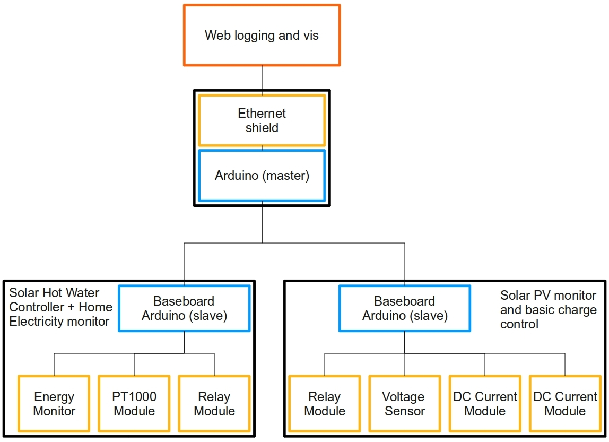

Networked Solar hot water controller, Solar PV monitor and Home Electricity monitor
Case Study: ogoronwy house sustainability project
Introduction
...
System schematic

PV monitor and simple charge controller unit
The unit consists of:
- Battery Voltage sensor - simple voltage divider
- Load Current sensor - Allegro ACS715 cool components
- Generation Current sensor - Allegro ACS715 cool components
- 12V Automotive Relay module with TIP121 driver
- Barebones Stripboard Arduino (Suneil's good work)
- 74AHC125 tristate buffer for network functionality
{kind=link}
{kind=link}
{kind=link}
Left: The PV panels - courtesy of Ken Boak who has kindly lent me the panels
Middle: The PV monitor + charge control unit + ken's semi-hacked UPS inverter
Right: A closeup of the electronics
Arduino sketch for the above
Download: SolarPV30Nov.tar.gz
Template sketch for networked slaves:
Download: SlaveTemplate.tar.gz
Browse software in repository : software repository
Solar hot water controller and energy monitor unit
To build:
1) Follow guide on building a solar hot water controller here: Solar hot water controller v1.1
2) Follow guide on building a home energy monitor here: Mains AC energy monitor
3) Link both of the above to the same arduino
3) Download sketch for Solar hot water controller + Energy monitor unit configured as a slave
Download SHWEmonUnit26Nov.tar.gz : software repository
Master + ethernet unit
Template sketch for requesting data from slave units and forwarding the data via ethernet to web server:
Download MasterEthernetTemplate.tar.gz
Example sketch for implementation above:
Download MasterPVSHWExample.tar.gz
Browse software in repository : software repository
Web logging and graphing
I've written a mini guide here on implementing web logging and graphing to which the above links up too: Web Logging and Graphing
Further development
- Would be great to have Relay module, PT1000 module, energy monitor module all PCB'ed up with standard 3 or 4 wire connectors for simple plug and play hardware setup. Using the same connectors as nuelectronics do may be a good idea to have compatibility.